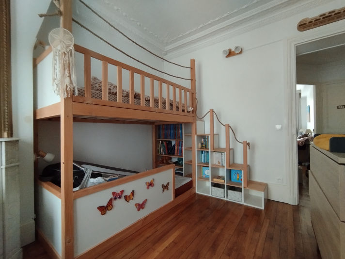
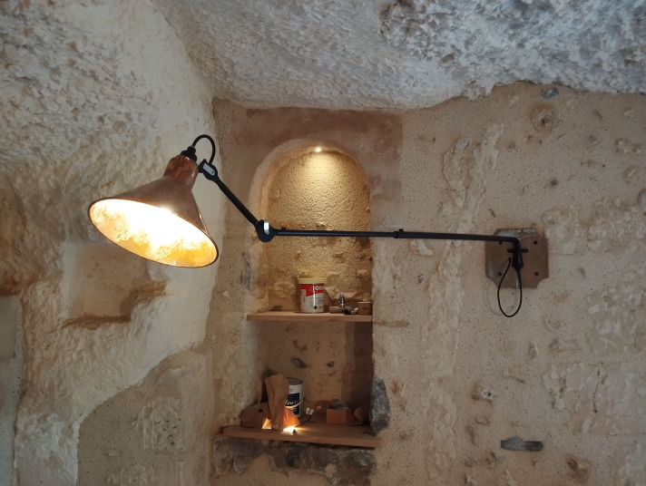
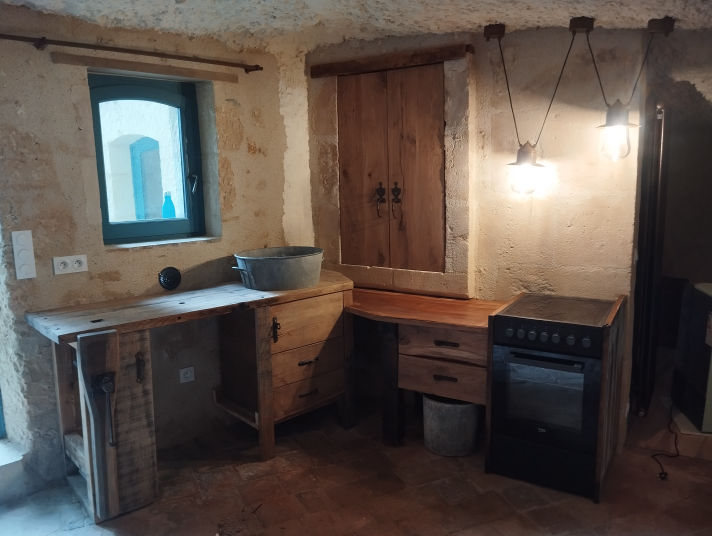
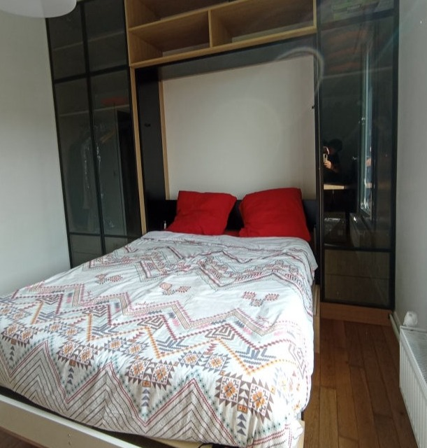
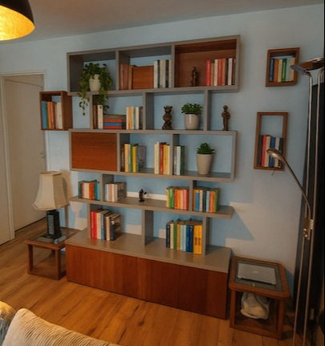
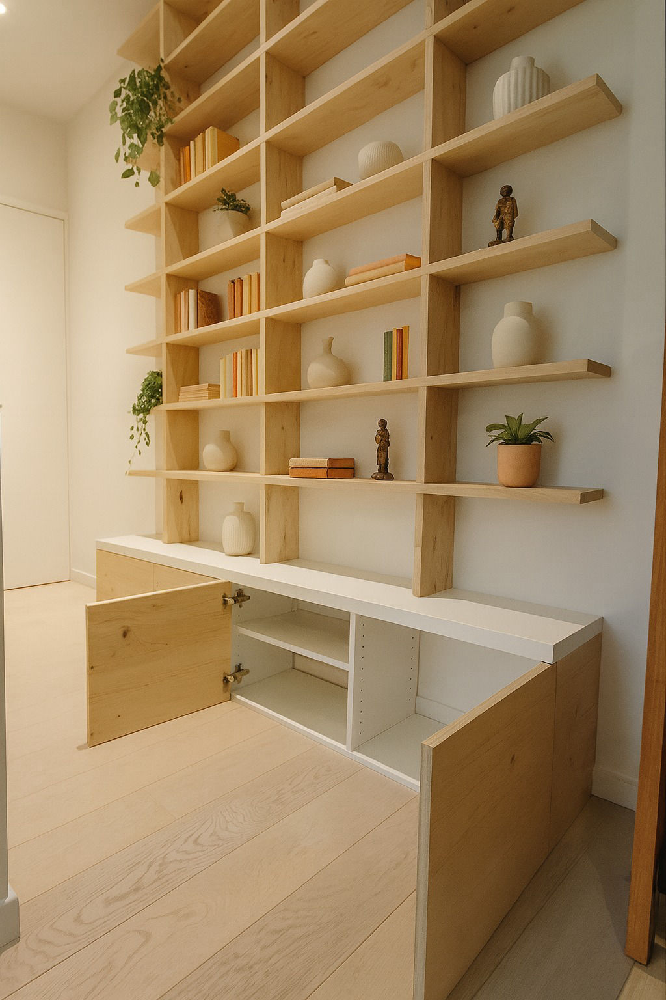
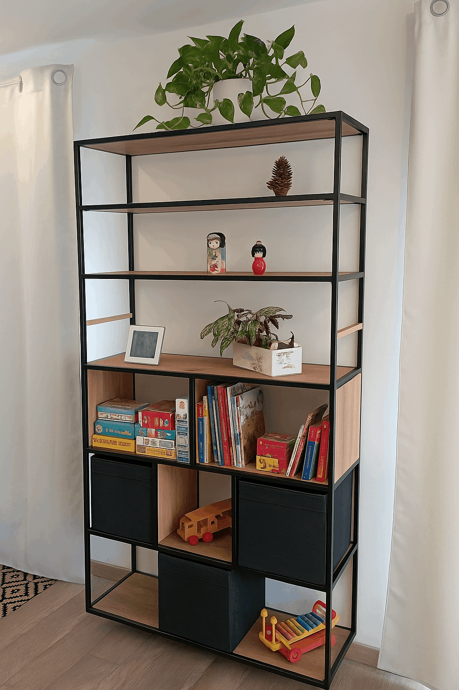
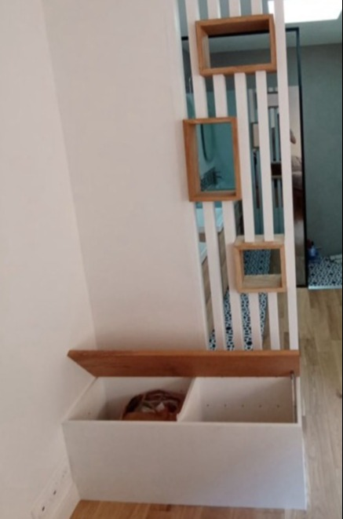
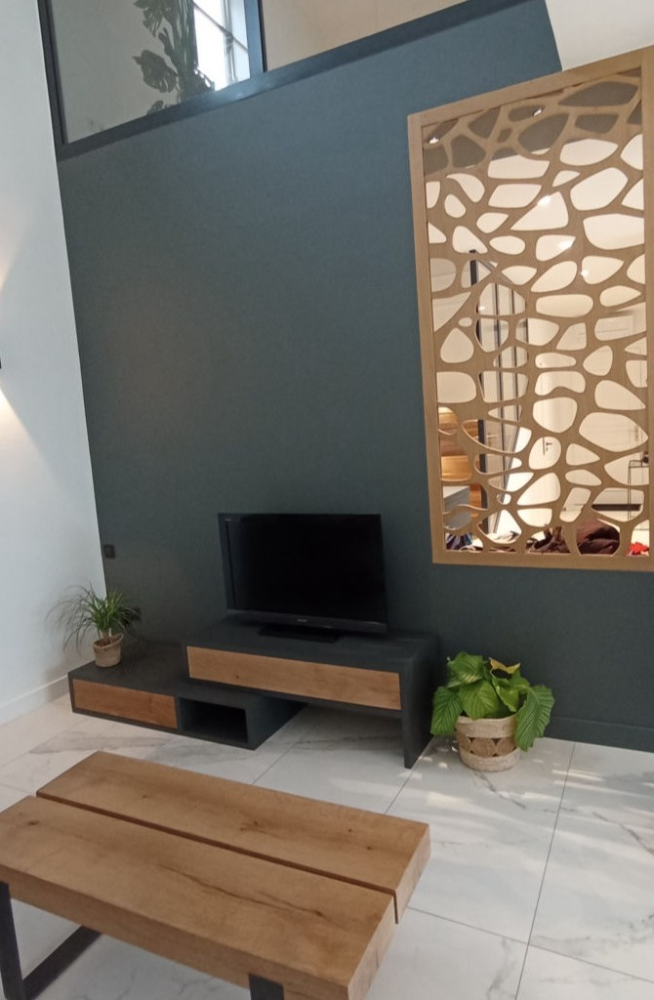
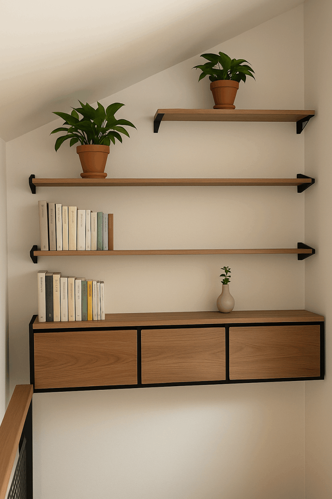

Lit superposé cabane Bibliothèque

Étagères + Lampes

Création sur mesure dans une maison troglodyte — la cuisine est un ancien établi de menuisier

Dressing canapé portes vitrées — encadrement métal mécanosoudé sur mesure

Lit escamotable

Caisson bibliothèque médium 25mm — façade en bois exotique, recyclage d'un ancien meuble

Caisson bibliothèque en épicéa massif

Bibliothèque suspendue bois métal — chêne massif, peinture époxy noir profond

Claustra en Douglas peint — niche et plateau de banc coffre en chêne massif

Rangement, bureau + étagères — fixation invisible en chêne massif

Meuble TV médium 25mm — façade chêne, ouverture push-to-open

Caisson ossature métallique mécano-soudée — façade chêne veinage continu